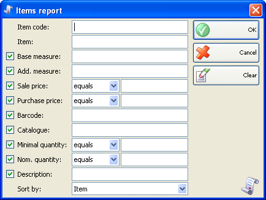
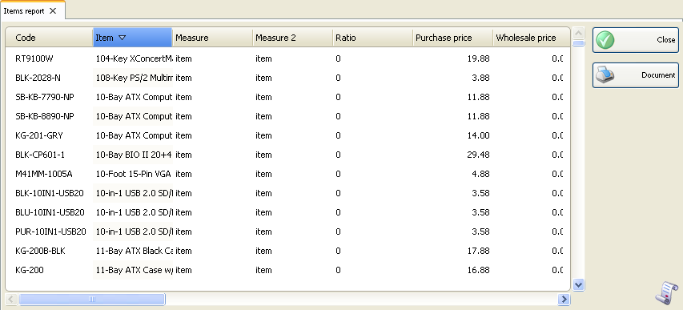

Raport articole
Utilizati Raport articole �pentru a tipari lista articolelor, incluzand preturile, unitatile de masura si codurile. Puteti folosi acest raport pentru a genera lista de preturi, lista pentru preluare stoc, etc. Raportul contine toate campurile completate in lista de articole si poate fi arhivat dupa diferite criterii (nume, cod, etc.).
In prima fereastra a raportului specificati criteriul de filtrare care va fi folosit pentru vizualizare.
Numai liniile verificate (bifate) vor fi vizualizate in raport.

Puteti sa alegeti un filtru pentru fiecare camp prin apasarea tastei �F4.
Puteti limita raportul la un singur criteriu. De exemplu. Puteti vizualiza lista articolelor cu o anumita unitate de masura. Puteti aplica mai multe criterii in acelasi timp � de exemplu vizualizarea listei articolelor cu o anumite unitate de masura si cantitate mai mare decat zero.
Pentru a sterge toate filtrele specificate, click pe butonul Clear. In aceasta situatie, raportul va afisa toate operatiile effectuate, fara nici o restrictie.
Click pe butonul OK pentru a genera raportul folosing unul sau mai multe criterii (dup ace acestea au fost selectate). Click butonul Cancel pentru a inchide fereastra.

�2006-2012 Microinvest, All rights reserved